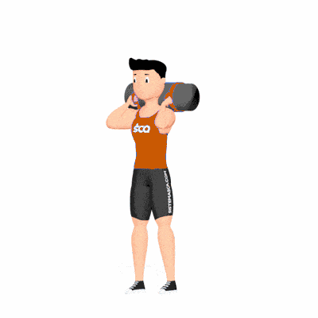

Lunges Sandbag

Exercício de CrossFit que fortalece quadríceps, glúteos, posteriores e adutores da coxa, utilizando o sandbag como sobrecarga instável. Indicado para ganhos de força, equilíbrio e resistência muscular.
Ficha Técnica
Tipo: CrossFit
Grupo Muscular: Perna
Aparelho: Nenhum
Músculos: Nenhum
Como realizar
- Apoie o sandbag sobre os ombros e segure firme com ambas as mãos;
- Fique em pé com pés afastados na largura dos ombros;
- Inspire e dê um passo à frente, flexionando os joelhos até formar ângulos de 90°;
- Mantenha o tronco ereto e abdome contraído durante o movimento;
- Empurre o pé da frente contra o solo para retornar à posição inicial e repita com a outra perna.
 RC STORE
RC STORE